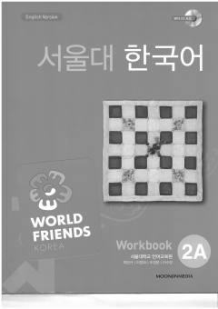

SNSeul Milliy Universitetining koreys tili 2A darajasidagi mashqlar daftari va qo'shimcha o'quv qo'llanmasi.
Ushbu kitob Seul Milliy Universitetining Koreys tili 2A o'quv qo'llanmasiga moslashtirilgan bo'lib, talabalarning lug'at boyligi va grammatik ko'nikmalarini mustahkamlash uchun mo'ljallangan. Unda turli xil mashqlar, takrorlash bo'limlari va real muloqot kontekstida tilni qo'llash imkonini beruvchi topshiriqlar mavjud. Kitob o'quvchilarning tinglash, o'qish, yozish va gapirish malakalarini bosqichma-bosqich rivojlantiradi.